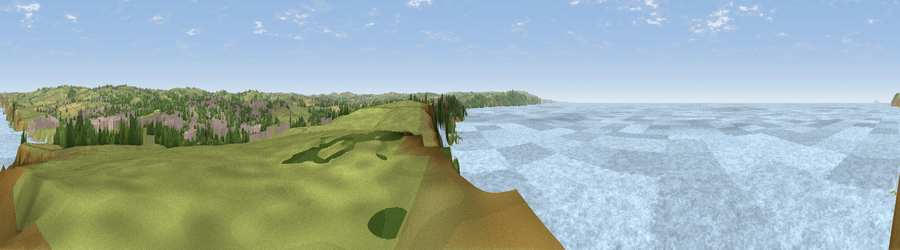

Viewpoint near Bude
#11869 in England · top 31% of its area beats it · near Bude · footpathWhere it is
The exact computed spot (SS 19975 05875). Click the marker for map links.
Public access: a public right of way passes within 8 m of this spot. Computed from Natural England's CRoW access layer and OpenStreetMap rights of way — not the legal definitive map. Always verify locally.
The view, rendered

A 360° render of this exact spot computed from the terrain model, tree cover and land cover — summer colours, afternoon light, calibrated against photographs of famous viewpoints. Real trees, hedges and buildings will differ in detail.
The panorama
Grey silhouette: terrain skyline in each direction (720 bearings, Earth curvature and refraction included). Dashed green: skyline with trees (+15 m) and buildings (+8 m) as obstacles. Blue strip: how far the ground is visible on each bearing.
Where the view opens
Wedge length = distance to the farthest visible ground on that bearing (vegetation-aware). Rings at 10, 25 and 50 km.
What fills the view
82% water · 13% grassland · 2% built-up · 2% woodland ·
Angular shares of the visible panorama (visual magnitude), not map area. Landscape diversity 0.29 (0–1 Shannon).
Key numbers
More beautiful places nearby
The staircase of upgrades: each row has a higher view potential than everything closer. Driving times are estimates from straight-line distance, calibrated against real road routing — check an actual route before setting out.
| Place | Direction | Drive | Score |
|---|---|---|---|
| Viewpoint near Widemouth Bay | S · 2 km | ~4 min | 70.7 |
| Viewpoint near Poughill | NE · 4 km | ~9 min | 73.3 |
| Viewpoint near Poughill | NNE · 4 km | ~10 min | 74.0 |
| Viewpoint near Poundstock | S · 6 km | ~12 min | 76.0 |
| Viewpoint near Poundstock | SSW · 7 km | ~14 min | 79.7 |
| Viewpoint near Crackington Haven | SSW · 8 km | ~16 min | 81.8 |
| Viewpoint near Crackington Haven | SSW · 14 km | ~25 min | 88.1 |
| Viewpoint near Combe Martin | NE · 58 km | ~80 min | 88.9 |
50.82435, -4.55740 · source: screening · position refined by local search. Computed location — check access rights before visiting.